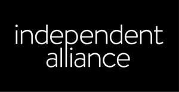

Trade Mark Journal No.2025/014 4 April 2025
UK00004171808 11 March 2025 (35,41)
Mark 1
Independent Alliance
Mark 2
Mark 3
Mark 4

- Class 35
- Marketing; Advertising and marketing; Promotional marketing; Influencer marketing; Advertising and marketing services; Product marketing; Marketing consultancy; Affiliate marketing; Digital marketing; Advertising, marketing and promotion services; Marketing, advertising and promotion services; Advertising, marketing and promotional services; Marketing, advertising, and promotional services; Advertising, promotional and marketing services; Marketing research; Online marketing; Internet marketing; Marketing services; On-line advertising and marketing services; Marketing analysis; Marketing information; Distribution of advertising, marketing and promotional material; Direct marketing; Promotion, advertising and marketing of on-line websites; Marketing advice; Planning of marketing strategies; Event marketing; Research services relating to advertising and marketing; Marketing assistance; Marketing management advice; Development of marketing concepts; Marketing plan development ; Direct marketing services; Business advice relating to strategic marketing; Marketing research and analysis; Marketing research or analysis; Providing marketing consulting in the field of social media; Advertising; Advertising and marketing services provided via communications channels; Market research and marketing studies; Advertising planning; Publicity and sales promotion services; Developing promotional campaigns for business; Copywriting; Advertising and promotion services; Advertising and promotional services; Promotional and advertising services; Promotional advertising services; Publicity and sales promotion; Advertising and publicity; Publicity and advertising; Conducting of marketing studies; Conducting marketing studies; Search engine marketing services; Administration relating to marketing; Sales promotion using audiovisual media; Advice relating to marketing management; Preparation of marketing plans; Market research for advertising; Development of promotional campaigns; Planning services for advertising; Preparation of advertising campaigns; Preparation of reports for marketing; Digital advertising services; Sales promotion; Design of advertising brochures; Organisation of customer loyalty programs for commercial, promotional or advertising purposes; Promotion of special events; Arranging promotion of charitable fundraising events; Organization of events, exhibitions, fairs and shows for commercial, promotional and advertising purposes; Arranging and conducting of promotional events; Organisation of exhibitions and events for commercial or advertising purposes; Organisation and management of business incentive and loyalty schemes; Administration of loyalty and incentive schemes; Organisation and management of customer loyalty programs; Organization, operation and supervision of loyalty and incentive schemes; Administration of customer loyalty and incentive schemes; Strategic business planning; Loyalty scheme services; Loyalty, incentive and bonus program services; Customer relationship management; Administration of membership schemes; Administration of loyalty rewards programs; Administration of loyalty rewards programmes; Organisation, operation and supervision of customer loyalty schemes.
- Class 41
- Training courses in strategic planning relating to advertising, promotion, marketing and business; Training services relating to retail marketing; Organisation of entertainment events; Organising events for entertainment purposes; Organisation of educational events; Arranging of educational events; Conducting of live entertainment events; Arranging and conducting of entertainment events; Entertainment services in the nature of organizing social entertainment events; Arranging and conducting of live entertainment events; Organisation of parties; Administration [organisation] of competitions.
THEIPG LTD
Independent Buying Consortium Limited